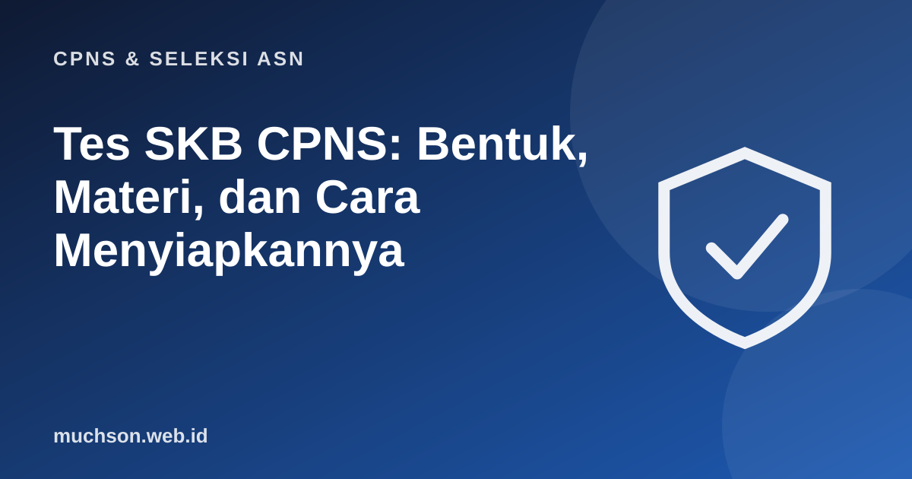

Beranda › Artikel › CPNS & Seleksi ASN
CPNS & Seleksi ASNTes SKB CPNS: Bentuk, Materi, dan Cara Menyiapkannya
Setelah lolos SKD, Anda masuk ke tahap yang bobotnya 60% dari nilai akhir: SKB. Berbeda dari SKD yang seragam, isi SKB bergantung pada jabatan yang dilamar dan instansinya. Berikut apa kata aturan tentang bentuk, sumber materi, tes tambahan, dan cara menyiapkan diri tanpa menebak-nebak.

SKB: menguji kompetensi bidang sesuai jabatan
Pasal 1 PermenPANRB 6/2024 mendefinisikan Kompetensi Bidang sebagai kemampuan dan karakteristik berupa pengetahuan, keterampilan, dan perilaku yang diperlukan untuk melaksanakan tugas jabatan sehingga seseorang mampu menampilkan unjuk kerja yang tinggi. SKB mengukur itu, dan hanya pelamar yang dinyatakan lulus SKD yang mengikutinya (Pasal 32 ayat 2). Dasar pelaksanaannya adalah CAT BKN (ayat 3).
Deskripsi teks diagram
- Lulus SKD: ambang batas dan peringkat 3 kali formasi
- SKB dengan CAT BKN: soal sesuai jabatan
- SKB tambahan (jika ada): tes lain yang diumumkan instansi
- Integrasi nilai: SKD 40% + SKB 60%
Per 17 November 2026 akun SSCASN CPNS 2026 sudah dibuka, tetapi jadwal pendaftaran dan tahapan seleksi belum diumumkan resmi. Pada seleksi 2024, misalnya, SKB tambahan non-CAT dan SKB CAT dijadwalkan terpisah menurut surat BKN. Jadwal 2026 akan ditentukan pengumuman resmi.
Dari mana materi SKB berasal
Asal soal SKB ditentukan jenis jabatan (Pasal 33):
| Jenis jabatan | Penyusun materi | Catatan |
|---|---|---|
| Jabatan Fungsional (JF) | Instansi pembina JF | Disusun lalu dimasukkan ke bank soal CAT BKN |
| Jabatan Pelaksana | Instansi teknis jabatan pelaksana | Dapat juga memakai soal SKB yang sesuai atau serumpun dengan JF terkait |
Karena itu tidak ada satu kisi-kisi SKB untuk semua orang. Laporan detikFinance pada November 2024 yang mengutip penjelasan KemenPAN-RB menyebut informasi materi bergantung pada instansi dan formasi yang dipilih, sehingga pelamar diminta memperhatikan seluruh informasi tentang formasinya.
Tes tambahan di luar CAT: apa saja yang mungkin keluar
Selain CAT BKN, materi SKB dapat berupa jenis tes berikut (Pasal 34). Tidak semua jabatan memakainya; hanya yang disebut pada pengumuman lowongan yang berlaku.
- Psikotes
- Tes potensi akademik
- Tes kemampuan bahasa asing
- Tes kesehatan jiwa
- Tes kesegaran jasmani atau tes kesamaptaan
- Tes praktik kerja
- Uji penambahan nilai dari sertifikat kompetensi
- Wawancara
- Tes lain sesuai persyaratan jabatan
Pemerintah membatasi porsinya supaya CAT tetap menjadi nilai utama:
| Instansi | Jumlah tes tambahan | Bobot tes tambahan | Ketentuan lain |
|---|---|---|---|
| Instansi Pusat | Paling banyak 3 jenis per jabatan, setelah persetujuan Menteri | Paling tinggi 50% dari nilai SKB (kumulatif) | Wawancara di luar CAT paling tinggi 10% dari nilai SKB (Pasal 35) |
| Instansi Daerah | Paling banyak 1 jenis, untuk jabatan sangat teknis atau keahlian khusus | Paling tinggi 40%; CAT BKN paling rendah 60% | Tidak boleh berupa wawancara (Pasal 36) |
Tempat mencari tahu isi dan bobot SKB Anda
Aturan mewajibkan pengumuman lowongan memuat informasi yang cukup untuk menyiapkan diri. Pasal 21 ayat 4 menyebut isi minimalnya, antara lain: nama jabatan, jumlah lowongan, unit kerja penempatan, kualifikasi pendidikan atau sertifikasi, rentang penghasilan per jabatan, deskripsi jabatan, jadwal tahapan seleksi, syarat pelamar, serta tata cara pendaftaran dan seleksi. Jika instansi menyelenggarakan SKB tambahan, pengumuman memuat jenis dan bobot nilai tesnya, dan jika ada tes yang menggugurkan, kriterianya wajib dicantumkan (Pasal 22 ayat 1 dan 2).
Instansi yang menyelenggarakan SKB tambahan juga menyusun pedoman yang paling sedikit memuat jenis tes, pokok substansi dan kriteria penilaian, kompetensi penguji, bobot, sifat menggugurkan atau tidak, serta formulir atau aplikasi yang dipakai (Pasal 37 ayat 2).
Cara menyiapkan diri tanpa kisi-kisi resmi
Deskripsi teks diagram
- Sebelum melamar: Pilih jabatan dengan sadar. Pelajari deskripsi jabatan dan kualifikasi (artikel memilih formasi)
- Selama SKD: Pertahankan ritme latihan. Pastikan skor SKD aman agar punya kesempatan ke SKB
- Setelah lulus SKD: Petakan materi SKB. Baca pengumuman, standar kompetensi, dan regulasi bidang jabatan
- Dua minggu sebelum SKB: Latihan soal bidang dan tes tambahan. Kebugaran, wawancara, atau praktik sesuai pengumuman
- Mulai dari deskripsi jabatan. Soal SKB mengukur kemampuan menjalankan tugas yang tertulis di sana.
- Pelajari regulasi dan istilah bidang jabatan. Untuk jabatan fungsional, peraturan instansi pembina menjadi sumber utama.
- Latih format CAT. SKB memakai CAT BKN seperti SKD, jadi ritme dan manajemen waktu tetap berlaku.
- Siapkan tes tambahan sesuai jenisnya. Kebugaran perlu waktu berminggu-minggu, wawancara perlu latihan bicara.
- Hati-hati dengan klaim kisi-kisi resmi dari pihak ketiga. Rujuk pengumuman instansi, bukan bocoran.
SKD yang kuat membuka kesempatan ke SKB. Uji kesiapan SKD Anda dengan tryout SKD gratis di LolosSeleksi, lengkap dengan rapor per subtes.
Tanya jawab
Apakah ada kisi-kisi SKB resmi untuk semua jabatan?
Apakah SKB selalu pakai CAT?
Berapa bobot wawancara di SKB?
Apa itu tes tambahan yang menggugurkan?
Kapan SKB dilaksanakan?
Referensi
- Peraturan Menteri PANRB Nomor 6 Tahun 2024 tentang Pengadaan Pegawai ASN (teks resmi, BKN) (membuka tab baru)
- Peraturan Menteri PANRB 6/2024, status berlaku dan mencabut Permen 27/2021 (peraturan.bpk.go.id) (membuka tab baru)
- detikFinance, 5 November 2024: kisi-kisi SKB CPNS 2024 dari KemenPAN-RB (membuka tab baru)
- Kompas.com, 16 November 2026: registrasi akun SSCASN CPNS 2026 dibuka, jadwal pendaftaran belum diumumkan (membuka tab baru)